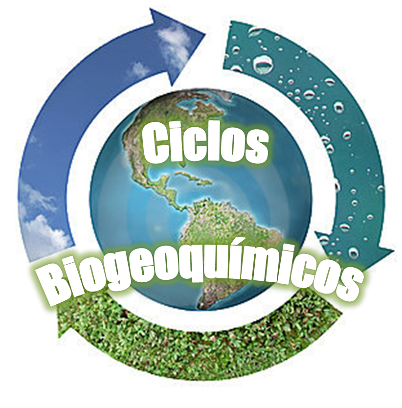

Todos los seres vivos que habitamos el planeta necesitamos obtener nutrientes a través del alimento para sobrevivir. Los elementos indispensables para la vida a menudo se encuentran en un ser vivo o en la tierra y sufren cambios químicos. El reciclamiento de los nutrientes o elementos desde el ambiente o componente abiótico a los organismos dan lugar a lo que se conoce como ciclos biogeoquímicos, importantes para cuidar el medio ambiente donde se depositan, ya sea el suelo, el aire o el agua, ya que vuelven a formar parte de un ser vivo.

La materia circula desde el mundo vivo hacia el ambiente abiótico y de regreso; esa circulación constituye los ciclos biogeoquímicos.
Estos son procesos naturales que reciclan elementos en diferentes formas químicas desde el medio ambiente hacia los organismos, y luego a la inversa. Agua, carbono, oxígeno, nitrógeno, fósforo y otros elementos recorren estos ciclos, conectando los componentes vivos y no vivos de la Tierra.
La tierra es un sistema cerrado donde no entra ni sale materia. Las sustancias utilizadas por los organismos no se "pierden" aunque pueden llegar a sitios donde resultan inaccesibles para los organismos por un largo período. Sin embargo, casi siempre la materia se reutiliza y a menudo circula varias veces, tanto dentro de los ecosistemas como fuera de ellos.
Se conocen los siguientes ciclos biogeoquímicos:
Referencias:
http://www.biologia.edu.ar/ecologia/CICLOS%20BIOGEOQUIM.htm
María Eugenia Méndez Rosales, (2015), Ecología y medio ambiente, Book Mart, México, pag.66.